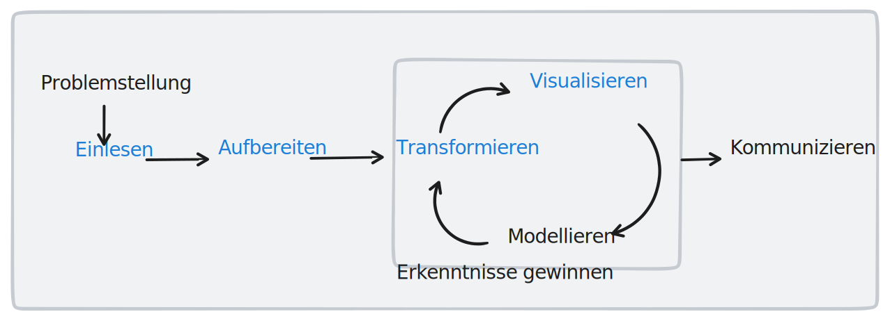

Business Analytics
03 | Deskriptive Analyse - Part 1
Lernziele
Deskriptive Analyse
1️⃣ Programmierkonzept: “Funktionen”
2️⃣ Einlesen und Aufbereiten von Daten
3️⃣ Arbeiten mit Python-Modul pandas
1 Programmierkonzept: “Funktionen”
Ausgangssituation
Funktionen
Wir haben bereits erste Python-Programme geschrieben
Einführende Fallstudie griff auf Module
pandas(Dataframes) undseaborn(Visualisierungen) zurückUm Fallstudie zu bearbeiten haben wir Funktionen1 aus diesen Modulen verwendet
Frage: Was sind eigentlich Funktion?
Was sind Funktionen: Analogie “Toaster”
Funktionen

Was sind Funktionen: Analogie “Toaster”
Funktionen
- Funktionen in der Programmierung sind wie Toaster: klar definierte Aufgabe (d.h. Funktion)
- Sie nehmen Eingabewerte entgegen, verarbeiten sie und geben Ergebnisse zurück.
- Analogie: Brot (Eingabewerte) -> Rösten (Verarbeitung) -> geröstetes Brot (Ergebnis).
Was sind Funktionen: Analogie “Excel”
Funktionen
Was sind Funktionen: Analogie “Excel”
Funktionen

Was sind Funktionen: Analogie “Excel”
Funktionen
ANZAHL()ist eine Excel-Funktion, die die Anzahl der Elemente in einer Spalte zählt
B3:B12sind die Eingabewerte
=ANZAHL(B3:B12)verarbeitet die Eingabewerte und zählt die Elemente
10ist der Rückgabewert, d.h. das Ergebnis der Funktion
Wofür benötige ich Funktionen?
Funktionen
- Wiederverwendbarkeit: Funktionen ermöglichen die Wiederverwendung von Code, wodurch redundante Codestellen reduziert und die Effizienz verbessert wird.
- Modularität: Funktionen fördern die Aufteilung eines Programms in kleinere, unabhängige Bausteine, die leichter zu verstehen und zu warten sind.
- Lesbarkeit: Funktionen mit aussagekräftigen Namen verbessern die Lesbarkeit des Codes, da sie die Absicht und Funktionalität des Codeblocks klar kommunizieren.
- Fehlerbehebung: Durch die Verwendung von Funktionen können Fehler leichter identifiziert und isoliert werden, da der Code in überschaubaren Einheiten organisiert ist.
Schreiben von Funktionen in Python
Funktionen
Syntax:
In Python werden Funktionen mit dem Schlüsselwort
defdefiniert, gefolgt vom Funktionsnamen und Klammern(), die die Parameter enthalten.Jeder Funktionsname sollte aussagekräftig sein und die Aktion oder Berechnung, die sie ausführt, beschreiben.
Die Parameter sind die Eingabewerte, mit denen die Funktion arbeitet.
Nach der Parameterliste folgt ein Doppelpunkt
:, der den Beginn des Funktionskörpers markiert.Der Funktionskörper sollte eingerückt sein, um den Code innerhalb der Funktion vom restlichen Code abzugrenzen.
Eine Funktion kann Werte mit dem Schlüsselwort
returnzurückgeben, gefolgt vom Wert oder Ausdruck, der zurückgegeben werden soll.
Ausführen von Funktionen in Python
Funktionen
Um eine Funktion in Python aufzurufen, verwenden Sie den Funktionsnamen, gefolgt von Klammern
()und den Argumenten, die an die Parameter der Funktion weitergegeben werden.Argumente sind die konkreten Werte, die an die Parameter einer Funktion übergeben werden, wenn sie aufgerufen wird.
Die Reihenfolge der Argumente sollte der Reihenfolge der Parameter in der Funktionsdefinition entsprechen.
Wenn die Funktion einen Wert zurückgibt, kann dieser Wert in einer Variable gespeichert oder direkt verwendet werden.
Aufgabe 1
Funktionen
Aufgabenstellung:
Erstellen Sie eine Funktion, die den Break-Even-Punkt berechnet, an dem die Gesamtkosten eines Unternehmens gleich den Gesamteinnahmen sind. Die Funktion soll den Break-Even-Punkt in Form der Anzahl der verkauften Einheiten zurückgeben.
Anforderungen:
Definieren Sie eine Funktion mit einem sinnvollen Namen, die drei Parameter akzeptiert:
fixkosten, variable_kosten_pro_einheit und preis_pro_einheit.Geben Sie das Ergebnis als Ganzzahl zurück, da es sich um eine Anzahl von Einheiten handelt. Verwenden Sie die Funktion round() oder int() in Python, um das Ergebnis auf die nächste ganze Zahl zu runden bzw. die Nachkommastellen abzuschneiden.
Rufen Sie die Funktion mit Werten Ihrer Wahl auf und speichern Sie das Ergebnis in einer Variable.
Lösung Aufgabe 1
Funktionen
Aufgabe 2
Funktionen
Aufgabenstellung:
Erstellen Sie eine Funktion, die einen Betrag in einer Ausgangswährung in einen Betrag in einer Zielwährung umrechnet, basierend auf dem gegebenen Wechselkurs.
Anforderungen:
Definieren Sie eine Funktion mit dem Namen
umrechnung_waehrung, die zwei Parameter akzeptiert:betrag,wechselkursGeben Sie das Ergebnis als Fließkommazahl mit zwei Nachkommastellen zurück. Verwenden Sie die Funktion
round()in Python, um das Ergebnis auf zwei Nachkommastellen zu runden.Rufen Sie die Funktion mit einem Betrag und einem Wechselkurs Ihrer Wahl auf und speichern Sie das Ergebnis in einer Variable.
Geben Sie das Ergebnis mithilfe einer print-Anweisung aus, gefolgt von der Zielwährung.
Lösung Aufgabe 2
Funktionen
Definition:
2 BA-Prozess: Einlesen und Aufbereiten von Daten
Business Analytics Prozess
Deskriptive Analyse

Großteil der Datenanalyse besteht aus der Aufbereitung der Daten
Deskriptive Analyse
Warum Aufbereitung?
erheblicher Teil der Arbeit bei der Datenanalyse entfällt auf die Vorverarbeitung und Bereinigung der Daten.
Einige Schätzungen gehen davon aus, dass 50% bis 80% der Zeit, die für ein Datenanalyseprojekt aufgewendet wird, der Datenvorverarbeitung gewidmet ist.1
Einige Gründe für den hohen Zeitaufwand bei der Vorverarbeitung sind:
Datenqualität: Daten aus der realen Welt sind oft “dreckig” bzw. enthalten fehlende Werte, Inkonsistenzen und Fehler.
Datenintegration: Das Zusammenführe n von Daten aus mehreren Quellen erfordert häufig das Lösen von Konflikten bei Formaten, Einheiten oder Datenstrukturen.
Datentransformation: Daten müssen oft transformiert, normalisiert oder aggregiert werden, um für die Analyse oder Modellierung geeignet zu sein.
Merkmalsbildung: Das Erstellen neuer Merkmale aus den Rohdaten kann ein zeitaufwändiger Prozess sein, der Fachwissen und Kreativität erfordert.
Werkzeug: Pandas
Deskriptive Analyse

Werkzeug: Pandas
Deskriptive Analyse
- Wir werden im Rahmen unserer Analyse(n) verschiedene Module / Bibliotheken und Funktionalitäten Pythons kennenlernen.
- Eine der wichtigsten Bibliotheken ist
pandas. Wir bezeichnenpandasals das Schweizer Taschenmesser der Datenanalyse, weil es ein mächtiges und vielseitiges Werkzeug für die Datenanalyse und -verarbeitung in Python ist.
- Pandas bietet für nahezu alle gängigen Anforderungen - sei es Datenimport, Datenbereinigung, Datentransformation und -analyse oder sogar Visualisierung - nützliche Funktionalitäten.
- Die Palette an Funktionalitäten ist so umfangreich, dass wir diese unmöglich alle vorstellen können. Wir glauben auch nicht, dass dies didaktisch sinnvoll ist. Stattdessen werden wir geeignete Funktionen immer dann vorstellen, wenn wir sie für unsere Analyse benötigen. Viele der vorgestellten Module bieten Funktionalitäten an, die wir nicht nutzen. Es ist deshalb sinnvoll, dass Sie sich die Dokumentation der Funktionen anschauen, wenn Sie diese für Ihre Analyse benötigen.
- Die Dokumentation finden Sie hier.
Einleitung: Fallstudie
Deskriptive Analyse
Die Bau und Werken GmbH wurde 1967 in Recklinghausen gegründet und hat dort bis heute ihren Sitz. Ursprünglich konzentrierte sich das Unternehmen auf kleinere kommunale Bauprojekte, entwickelte sich aber im Laufe der Zeit zu einem wichtigen Akteur in der kommunalen Bau- und Instandhaltungsbranche. Mit einem starken Netzwerk an Geschäftspartnern und Lieferanten führt das Unternehmen eine breite Palette von Projekten durch, vom Tiefbau bis hin zu städtischen U-Bahnen. Dabei legt es Wert auf Qualität und Kundenzufriedenheit, um einen ausgezeichneten Ruf in der Branche zu sichern.
Allerdings kämpft auch die Bau und Werken GmbH mit Projekten, die länger dauern und mehr kosten als geplant, was die Profitabilität beeinträchtigt. Geschäftsführer Maximilian Müller ist sich dieser Herausforderung bewusst und möchte das Problem lösen. Er erkennt, dass Bauverzögerungen und Kostenüberschreitungen die Profitabilität mindern, obwohl das Unternehmen grundsätzlich profitabel wirtschaftet. Müller plant, vergangene Projekte zu analysieren, um wiederkehrende Muster oder Faktoren zu identifizieren, die Verzögerungen und Kostenüberschreitungen verursachen.
Die Lösung dieser Herausforderung ist entscheidend für die Zukunft des Unternehmens, und Maximilian ist entschlossen, die Bau und Werken GmbH noch erfolgreicher und profitabler zu gestalten.
Einleitung: Datensatz
Deskriptive Analyse
Der Datensatz beinhaltet Informationen zu den Projekten, die das Unternehmen in den letzten Jahren durchgeführt hat. Die Daten wurden von einem Mitarbeiter der Bau und Werken GmbH in einer Excel-Tabelle erfasst und anschließend in das CSV-Format exportiert. Der Datensatz beinhaltet folgende Informationen:
Project_ID: eindeutige Identifikationsnummer des ProjektsName Projekt: Art des Projektes // Ort des Projektes (z.B. “Stadtpark // Eberhardtallee”)projekt_Beginn: Baubeginn bzw. Beginn der InstandhaltungsarbeitenPlan Bau fertig: geplantes Bauende bzw. InstandhaltungsendeFertig_IST: tatsächliches Bauende bzw. InstandhaltungsendeKosten Plan: budgetierte Gesamtkosten des ProjektesIst_Kosten: tatsächliche Gesamtkosten des ProjektesProject_team: internes Team, welches das Projekt bearbeitet hat
Link zum Datensatz: Construction.csv
Schritt 1: Problemstellung
Deskriptive Analyse
Was sollte Ziel unserer Analyse sein?
Welche Fragestellungen wollen wir beantworten?
Wichtig:
Formulieren der Problemstellung hilft, den Überblick zu behalten und die Analyse zu strukturieren.
Problemstellung sollte immer der erste Schritt der Analyse sein.
Daten Einlesen und Überblick verschaffen
Deskriptive Analyse
Beginnen wir mit der Analyse, in dem wir die Daten zunächst einlesen und aufbereiten. Dazu verwenden wir
read_csv(). Beiread_csv()handelt es sich um eine Funktion, der verschiedene Parameter übergeben werden können.Der wichtigste (und einzige zwingend notwendige) Parameter ist der Pfad zur Datei, die eingelesen werden soll.
Der Pfad der Datei kann als Link oder als lokaler Dateipfad übergeben werden
Einlesen: CSV-Datein können via read_csv() eingelesen werden
Deskriptive Analyse
Einlesen via Link:
Einlesen: CSV-Datein können via read_csv() eingelesen werden
Deskriptive Analyse
Einlesen via lokalem Pfad:
Wichtig:
- Der Dateipfad ist relativ zum Ordner, in dem sich die Jupyter-Notebook-Datei befindet.
- Datei liegt im Beispiel im Ordner
_data
- Ordner
_dataliegt im gleichen Ordner wie die Jupyter-Notebook-Datei
Daten Einlesen und Überblick verschaffen: grundsätzliches Vorgehen
Deskriptive Analyse
Pandas-Bibliothek importieren: Um Dateien mit Pandas einzulesen, muss zunächst die Pandas-Bibliothek in Python importiert werden: import pandas as pd
Einlesefunktion verwenden: Verwenden Sie eine der spezifischen Einlesefunktionen
read_...()von Pandas, um Dateien unterschiedlicher Formate einzulesen.
Funktionen für verschiedene Dateiformate:
CSV-Dateien:
pd.read_csv('dateiname.csv')- Liest eine CSV-Datei ein und gibt sie als DataFrame zurück.Excel-Dateien:
pd.read_excel('dateiname.xlsx')- Liest eine Excel-Datei ein und gibt sie als DataFrame zurück. Benötigt die zusätzlichen Bibliotheken openpyxl und xlrd.JSON-Dateien:
pd.read_json('dateiname.json')- Liest eine JSON-Datei ein und gibt sie als DataFrame zurück.HTML-Dateien:
pd.read_html('dateiname.html')- Liest eine HTML-Datei ein, extrahiert Tabellen aus dem HTML und gibt sie als Liste von DataFrames zurück. Benötigt die zusätzliche Bibliothek lxml.SQL-Datenbanken:
pd.read_sql('sql_query', connection_object)- Führt eine SQL-Abfrage auf einer Datenbank aus und gibt das Ergebnis als DataFrame zurück.…
Ersten Überblick verschaffen
Deskriptive Analyse
Vier Funktionen für den ersten Überblick:
head(): Zeigt die ersten Zeilen des DataFrames an.tail(): Zeigt die letzten Zeilen des DataFrames an.Anzahl Zeilen anpassen: z.B.
df.head(10)für die ersten zehn Zeileninfo(): Zeigt Informationen zum DataFrame an, z.B. Anzahl Zeilen, Anzahl Spalten, Datentypen, …describe(): Zeigt eine Zusammenfassung der numerischen Spalten an, z.B. Mittelwert, Standardabweichung, Minimum, Maximum, …
Aufgabe 1: Ersten Überblick verschaffen
Deskriptive Analyse
Lese die Datei
Construction.csvein und speichere sie in der Variabledf.Zeige die ersten 10 Zeilen des DataFrames an.
Zeige die letzten 3 Zeilen des DataFrames an.
Führen Sie die Funktion
info()auf den DataFramedfaus. Was stellen Sie fest?bestimmen Sie die durschnittlichen Kosten über alle Projekte
Lösung Aufgabe 1: Ersten Überblick verschaffen
Deskriptive Analyse
Aufbereitung der Daten
Deskriptive Analyse
Natürlich gibt es nicht den richtigen Weg, um Daten aufzubereiten. Jeder Datensatz ist unterschiedlich und nicht jede Analyse hat dieselben Anforderungen. Dennoch gibt es typische Aufgaben, die wir bei der Aufbereitung von Daten immer wieder vorfinden.
Wir werden uns im Folgenden einige dieser Aufgaben ansehen und die entsprechenden Lösungen diskutieren.
Variablennamen anpassen
Datentypen anpassen
Daten bereinigen
Fehlende Werte
Duplikate
Falsche Werte
Variablennamen anpassen
Deskriptive Analyse
Warum?
Nicht zwingend notwendig, Variablen umzubenennen
Vorhandene Bezeichnungen: nicht intuitiv, inkonsistent, unklar
Sinnvolle Umbenennung: schnellere Erkennung, intuitive Auswahl
Subjektive Komponente bei Umbenennung
Uneinheitliche Spaltennamen: Groß-/Kleinbuchstaben, Deutsch/Englisch, Leerzeichen/Unterstrich
Erschwert intuitive Auswahl und Analyse
Datensatz:
Welche Veränderungen könnten wir vornhemen, um die Spaltennamen zu vereinheitlichen?
Variablennamen anpassen
Deskriptive Analyse
Beispielhafte Anpassungen:
- alle Spalten in Kleinbuchstaben umwandeln
- alle Leerzeichen durch
_ersetzen - alle Begriffe
projectdurchprojektersetzen - wo sinnvoll kürzere Begriffe verwenden
- Begriffe wie
PlanundIsteinheitlich verwenden
Aufgabe 2: Variablennamen anpassen
Deskriptive Analyse
passen Sie die Spaltennamen des DataFrames
dfan.nehmen Sie dabei die Anpassungen auf der vorherigen Folie vor.
Lösung Aufgabe 2: Spaltennamen anpassen
Deskriptive Analyse
Code
| id | name | beginn | ende_plan | ende_ist | kosten_plan | kosten_ist | team | |
|---|---|---|---|---|---|---|---|---|
| 0 | HN-399443 | Straßenbau // Jennifer-Buchholz-Ring | 2014-09-01 | 2014-10-03 | 2014-10-02 | 219817.40 | 246192.34 | Team 3 |
| 1 | UD-626094 | Elektroarbeiten // Langernstraße | 2021-06-12 | 2021-08-16 | 2021-09-18 | 105683.14 | 144657.38 | Team 3 |
| 2 | IO-468103 | Spielplatz // Dussen vanweg | 2016-05-20 | 2016-06-29 | 2016-06-27 | 129851.26 | 136753.06 | Team 1 |
| 3 | OG-758899 | Stadtpark // Lübsstr. | 2014-11-11 | 2014-12-30 | 2015-01-28 | 181236.83 | 273996.91 | Team 2 |
| 4 | CZ-107835 | Elektroarbeiten // Försterweg | 2017-07-25 | 2017-10-08 | 2017-10-08 | 75205.92 | 77519.27 | Team 4 |
Datentypen anpassen
Deskriptive Analyse
Wir haben bereits gesehen, dass unser Datensatz nach dem Einlesen zwei Datentypen enthält: object und float64. Sind Datentypen für unsere Analyse passend?
Diskussion der Datentypen:
id: die Spalte beinhaltet Buchstaben, Zeichen und Zahlen (z.B. P-62602). Der Datentypobjectist also passend.name: die Spalte beinhaltet Text. Der Datentypobjectist also passend.beginn: die Spalte beinhaltet Datumswerte. Der Datentypobjectist nicht passend. Wir sollten den Datentyp in ein Datumsformat umwandeln.ende_plan: die Spalte beinhaltet Datumswerte. Der Datentypobjectist nicht passend. Wir sollten den Datentyp in ein Datumsformat umwandeln.ende_ist: die Spalte beinhaltet Datumswerte. Der Datentypobjectist nicht passend. Wir sollten den Datentyp in ein Datumsformat umwandeln.kosten_plan: die Spalte beinhaltet Zahlen. Der Datentypfloat64erscheint passend.kosten_ist: die Spalte beinhaltet Zahlen. Der Datentypfloat64erscheint passend.team: die Spalte beinhaltet Text. Der Datentypobjectist also passend.
Fazit:
Anpassen der Datumspalten in ein Datumsformat erscheint sinnvoll.
Datentypen anpassen: warum Datumsformate?
Deskriptive Analyse
- Zeitreihenanalyse: Konvertierung in Datumsformat ermöglicht einfache Analysen von Zeitreihendaten.
Datentypen anpassen in Python
Deskriptive Analyse
Wie können wir Datentypen in Python anpassen?
Es gibt verschiedene Wege, z.B.:
1️⃣ astype(): Verwenden Sie die astype() Methode, um den Datentyp einer Spalte zu ändern.
Für neuer_datentyp können Sie z.B. int64, float64, datetime64 oder category verwenden.
Aufgabe 3: Spalten in Datumsformat umwandeln
Deskriptive Analyse
Wandeln Sie die Spalten beginn, ende_plan und ende_ist in das Datumsformat um.
Lösung Aufgabe 3: Spalten in Datumsformat umwandeln
Deskriptive Analyse
Daten bereinigen
Deskriptive Analyse
Wir schauen uns im Folgenden einige Bereinigugnsmaßnahmen an, die wir an unserem Datensatz vornehmen können.
Fehlende Werte identifizieren und behandeln
Duplikate identifizieren und behandeln
Fehlerhafte Werte identifizieren und behandeln
Daten bereinigen: Fehlende Werte
Deskriptive Analyse
wir haben bereits gesehen (siehe
df.info()), dass nicht alle Spalten mit Werten gefüllt sind.wir wissen wir nicht, wo sich diese fehlenden Werte befinden.
Information ist aber wichtig, um zu entscheiden, wie wir mit den fehlenden Werten umgehen:
Beobachtungen mit fehlenden Werten entfernen?
fehlende Werte durch andere Werte ersetzen?
sind fehlende Werte zufällig verteilt oder gibt es einen Zusammenhang mit anderen Variablen?
sind fehlende Werte überhaupt relevant für die Analyse?
Daten bereinigen: Fehlende Werte
Deskriptive Analyse
Mit der Funktion
isna()können wir herausfinden, wo sich fehlende Werte befinden. Die Funktion können wir auf den gesamten Datensatz anwenden oder auf einzelne Spalten.die Funktion
isna()gibt einenTrueoderFalseWert zurück, je nachdem, ob der Wert fehlt oder nicht.
Beispiel
| id | name | beginn | ende_plan | ende_ist | kosten_plan | kosten_ist | team | |
|---|---|---|---|---|---|---|---|---|
| 0 | False | False | False | False | False | False | False | False |
| 1 | False | False | False | False | False | False | False | False |
| 2 | False | False | False | False | False | False | False | False |
| 3 | False | False | False | False | False | False | False | False |
| 4 | False | False | False | False | False | False | False | False |
| ... | ... | ... | ... | ... | ... | ... | ... | ... |
| 10014 | False | False | False | False | False | False | False | False |
| 10015 | False | False | False | False | False | False | False | False |
| 10016 | False | False | False | False | False | False | False | False |
| 10017 | False | False | False | False | False | False | False | False |
| 10018 | False | False | False | False | False | False | False | False |
10019 rows × 8 columns
Daten bereinigen: Fehlende Werte
Deskriptive Analyse
Ein typisches Analysemuster ist es, alle Zeilen (d.h. Beobahtungen) zu selektieren, die fehlende Werte enthalten.
Wir identifizieren alle Elemente, die fehlende Werte enthalten, indem wir die Funktion
isna()auf den gesamten Datensatz anwenden.Wir selektieren alle Zeilen, die fehlende Werte enthalten, indem wir die Funktion
any()auf die Ergebnisse der Funktionisna()anwenden.
Daten bereinigen: Fehlende Werte
Deskriptive Analyse
| id | name | beginn | ende_plan | ende_ist | kosten_plan | kosten_ist | team | |
|---|---|---|---|---|---|---|---|---|
| 103 | TH-593312 | Elektroarbeiten // Börnerplatz | 2018-05-07 | 2018-07-11 | 2018-07-17 | NaN | 69375.23 | Team 3 |
| 740 | NL-673150 | Baumbestand // Loosplatz | 2016-12-30 | NaT | 2016-12-31 | 16349.93 | 17892.16 | Team 3 |
| 896 | LM-748355 | Baumbestand // Martha-Bohlander-Ring | 2019-10-17 | 2019-10-22 | 2019-10-24 | NaN | 40637.75 | Team 4 |
| 996 | AY-257302 | Elektroarbeiten // Eimerstr. | 2014-02-03 | 2014-02-28 | 2014-03-01 | NaN | 112867.21 | Team 2 |
| 1059 | RR-446242 | Elektroarbeiten // Florentine-Kambs-Allee | 2013-06-16 | 2013-07-24 | 2013-07-23 | NaN | 164730.94 | Team 1 |
Daten bereinigen: Fehlende Werte
Deskriptive Analyse
Da wir keine weiteren Informationen zu den fehlenden Daten haben und auch keinen systematischen Fehler entdecken können, der zu den fehlenden Daten führt, werden wir die fehlenden Werte einfach entfernen. Dies können wir mit der Funktion dropna() erreichen.
<class 'pandas.core.frame.DataFrame'>
Int64Index: 9998 entries, 0 to 10018
Data columns (total 8 columns):
# Column Non-Null Count Dtype
--- ------ -------------- -----
0 id 9998 non-null object
1 name 9998 non-null object
2 beginn 9998 non-null datetime64[ns]
3 ende_plan 9998 non-null datetime64[ns]
4 ende_ist 9998 non-null datetime64[ns]
5 kosten_plan 9998 non-null float64
6 kosten_ist 9998 non-null float64
7 team 9998 non-null object
dtypes: datetime64[ns](3), float64(2), object(3)
memory usage: 703.0+ KBDaten bereinigen: Duplikate
Deskriptive Analyse
Beispieldatensatz mit Duplikaten
# Erstelle Beispiel-Datensatz
example = pd.DataFrame({'Spalte A': [1, 2, 3, 2, 4, 5],
'Spalte B': ['Hund', 'Katze', 'Vogel', 'Katze', 'Fisch', 'Vogel'],
'Spalte C': [19, 43, 1, 43, 127, 21]})
example| Spalte A | Spalte B | Spalte C | |
|---|---|---|---|
| 0 | 1 | Hund | 19 |
| 1 | 2 | Katze | 43 |
| 2 | 3 | Vogel | 1 |
| 3 | 2 | Katze | 43 |
| 4 | 4 | Fisch | 127 |
| 5 | 5 | Vogel | 21 |
Daten bereinigen: Duplikate
Deskriptive Analyse
können die Methode
duplicated()nutzen, um Duplikate in Zeilen eines DataFrames zu identifizieren.gibt eine Boolesche Reihe (True, False, True etc.) zurück, die angibt, ob eine Zeile ein Duplikat ist oder nicht
Standardmäßig werden dabei alle Spalten berücksichtigt, jedoch kann auch eine Teilmenge von Spalten angegeben werden, die bei der Suche nach Duplikaten berücksichtigt werden soll (via
subset)keepgibt an, welche Duplikate in der Ergebnisreihe enthalten sein sollen. Standardmäßig werden alle Duplikate außer dem ersten entfernt.
Daten bereinigen: Duplikate
Deskriptive Analyse
Wir müssen nun entscheiden, ob wir diesen Eintrag entfernen wollen oder nicht. In diesem Fall scheint es sinnvoll, den doppelten Eintrag zu entfernen, da wir in der Regel davon ausgehen, dass die Daten nur einmal erfasst wurden. Wir können dies mit der Methode drop_duplicates() tun. Diese entfernt standardmäßig die zweite Zeile einer doppelten Beobachtung. Wir können dies jedoch ebenfalls mit dem Parameter keep ändern (d.h. alle Duplikate entfernen oder nur die erste oder letzte Zeile).
Daten bereinigen: Duplikate
Deskriptive Analyse
Lassen Sie uns nun analysieren, ob es überhaupt Duplikate in unserem Datensatz gibt uns dafür alle Spalten berücksichtigen. Mit der Funktion sum() können wir die Anzahl der Duplikate ermitteln.
Fazit
Es gibt19Duplikate in unserem Datensatz. Schauen wir uns diese an.
Aufgabe 4: Duplikate anzeigen
Deskriptive Analyse
Schreiben Sie einen Code, der alle Duplikate in unserem Datensatz anzeigt.
lassen Sie die ersten 6 Zeilen ausgeben (d.h. die ersten 3 Duplikate)
Lösung 4: Duplikate anzeigen
Deskriptive Analyse
| id | name | beginn | ende_plan | ende_ist | kosten_plan | kosten_ist | team | |
|---|---|---|---|---|---|---|---|---|
| 34 | KN-987191 | Landschaftsbau // Helga-Krause-Allee | 2016-04-01 | 2016-04-04 | 2016-04-06 | 114862.28 | 125114.70 | Team 1 |
| 447 | SW-908572 | Elektroarbeiten // Karl-Heinrich-Ring-Allee | 2020-03-26 | 2020-06-07 | 2020-06-13 | 43298.09 | 60629.52 | Team 3 |
| 590 | ZE-101640 | Landschaftsbau // Henry-Steinberg-Gasse | 2013-10-25 | 2013-11-20 | 2013-11-26 | 99605.32 | 118141.92 | Team 3 |
| 1337 | DH-600607 | Straßenbau // Tröstplatz | 2015-01-06 | 2015-01-25 | 2015-01-26 | 189536.10 | 210407.91 | Team 1 |
| 1356 | JI-333627 | Ubahn // Karl-Friedrich-Eigenwillig-Platz | 2014-12-19 | 2015-03-18 | 2015-08-18 | 322147.45 | 331683.54 | Team 1 |
| 1436 | VV-651307 | Stadtpark // Reza-Cichorius-Straße | 2017-10-18 | 2018-01-02 | 2018-03-21 | 195746.98 | 203686.56 | Team 1 |
| id | name | beginn | ende_plan | ende_ist | kosten_plan | kosten_ist | team | |
|---|---|---|---|---|---|---|---|---|
| 1438 | AS-665106 | Landschaftsbau // Junckengasse | 2013-03-30 | 2013-04-20 | 2013-04-20 | 112341.63 | 171362.50 | Team 4 |
| 5617 | AS-665106 | Landschaftsbau // Junckengasse | 2013-03-30 | 2013-04-20 | 2013-04-20 | 112341.63 | 171362.50 | Team 4 |
| 8235 | BD-570752 | Landschaftsbau // Seifertstr. | 2021-10-27 | 2021-11-12 | 2021-11-14 | 83103.02 | 125081.94 | Team 4 |
| 2591 | BD-570752 | Landschaftsbau // Seifertstr. | 2021-10-27 | 2021-11-12 | 2021-11-14 | 83103.02 | 125081.94 | Team 4 |
| 1337 | DH-600607 | Straßenbau // Tröstplatz | 2015-01-06 | 2015-01-25 | 2015-01-26 | 189536.10 | 210407.91 | Team 1 |
| 6452 | DH-600607 | Straßenbau // Tröstplatz | 2015-01-06 | 2015-01-25 | 2015-01-26 | 189536.10 | 210407.91 | Team 1 |
Daten bereinigen: Duplikate
Deskriptive Analyse
In unserem Falle erscheint es sinnvoll, die Duplikate zu entfernen. Wir können dies mit der Funktion drop_duplicates() tun. Diese Funktion entfernt standardmäßig die zweite Zeile einer doppelten Beobachtung. Wir können dies jedoch ebenfalls mit dem Parameter keep ändern (d.h. alle Duplikate entfernen oder nur die erste oder letzte Zeile).
Falsche Werte
Deskriptive Analyse
Ein wichtiger Schritt bei der Datenbereinigung ist die Überprüfung der Daten auf (offensichtlich) falsche Werte. Nicht immer ist bereits bei der Aufbereitung der Daten erkennbar, ob ein Wert plausibel ist oder nicht. Häufig werden falsche Werte erst bei der Analyse der Daten sichtbar. Jedoch können und sollten einige Plausibilitätsprüfungen bereits bei der Aufbereitung der Daten durchgeführt werden.
Im vorliegenden Datensatz können wir z.B. folgende Plausibilitätsprüfungen durchführen:
1️⃣ Ist der Wert der Spalte id eindeutig?
2️⃣ Sind die Werte für Kosten (kosten_plan und kosten_ist) plausibel, d.h. sind die Kosten positiv (bzw. haben alle das gleiche Vorzeichen)?
3️⃣ Sind die Werte für die Datumsspalten (beginn, ende_plan und ende_ist) plausibel, d.h. (i) liegen die Werte in der Vergangenheit und (ii) ist das Enddatum nach dem Startdatum?
Falsche Werte: Eindeutigkeit der ID
Deskriptive Analyse
id eindeutig ist?
Falsche Werte: Eindeutigkeit der ID
Deskriptive Analyse
Vorgehen:
gib die Anzahl der eindeutigen Werte der Spalte
idausvergleiche die Anzahl der eindeutigen Werte mit der Anzahl der Zeilen des Datensatzes
In Python:
Falsche Werte: Kosten
Deskriptive Analyse
Sind die Werte für Kosten (kosten_plan und kosten_ist) plausibel, d.h. sind die Kosten positiv (bzw. haben alle das gleiche Vorzeichen)?
Variante 1
# Mit "mask" arbeiten
mask = df['kosten_plan'] < 0
df[mask]
# Ohne "mask" arbeiten
df[df['kosten_plan'] < 0]Variante 2
Falsche Werte: Kosten
Deskriptive Analyse
Der einfachste Weg, die Zeilen mit negativen Vorzeichen zu eliminieren, ist es den Datensatz mit query zu filtern. Wir können die Bedingung kosten_plan >= 0 nutzen, um alle Zeilen auszugeben, die einen positiven Kostenwert haben.
Wir könnten nun die gleiche Überprüfung für die Spalte kosten_ist durchführen. Stattdessen filtern wir aber alle Zeilen, die einen negativen Kostenwert haben, aus dem Datensatz heraus.
Falsche Werte: Datum
Deskriptive Analyse
Bei der nun folgenden Überprüfung kommt uns zugute, dass wir die Spalten bereits in den Datentyp datetime konvertiert haben. Wir können nun die Werte für die Spalten beginn, ende_plan und ende_ist miteinander vergleichen.
Wir können zwei Überprüfungen durchführen:
Sind alle Projekte bereits beendet?
Liegt das Datum für
ende_istnach dem Datum fürbeginn?
Falsche Werte: Datum
Deskriptive Analyse
1. Sind alle Projekte bereits beendet?
Das letzte Projekt wurde in der Vergangeheit beendet, d.h. wir können sicher sein, dass alle Projekte bereits beendet sind (und somit annehmen, dass auch alle Kosten bereits berücksichtigt wurden).
Falsche Werte: Datum
Deskriptive Analyse
2. Liegt das Datum für ende_ist nach dem Datum für beginn?
| id | name | beginn | ende_plan | ende_ist | kosten_plan | kosten_ist | team | |
|---|---|---|---|---|---|---|---|---|
| 1251 | TG-362669 | Baumbestand // Cornelia-Schönland-Gasse | 2017-08-16 | 2017-08-16 | 2017-08-16 | 55507.48 | 69877.32 | Team 2 |
| 1584 | CF-360814 | Baumbestand // Adlerallee | 2014-10-18 | 2014-10-19 | 2014-10-18 | 80258.30 | 80779.37 | Team 4 |
| 2456 | JV-632251 | Baumbestand // Gabriel-Gude-Platz | 2014-11-03 | 2014-11-03 | 2014-11-03 | 31973.47 | 35215.93 | Team 3 |
| 2764 | WS-799566 | Stadtpark // Hesseplatz | 2014-04-21 | 2014-04-22 | 2014-04-21 | 175422.45 | 270521.71 | Team 2 |
| 3319 | QC-047279 | Stadtpark // Heiko-Pohl-Straße | 2020-06-24 | 2020-07-12 | 2020-06-24 | 92345.10 | 117155.99 | Team 3 |
Falsche Werte: Datum
Deskriptive Analyse
Findings
es handelt sich ausschließlich um Projekte, die am gleichen Tag begonnen und beendet wurden.
prinzipiell nicht ausgeschlossen, jedoch erscheint dies - zumindest für einige Projekte - sehr unwahrscheinlich, da gleichzeitig hohe Kosten veranschlagt wurden, was auf eine längere Projektlaufzeit schließen lässt.
Was tun?
da wir uns in diesem Fall nicht sicher sind, ob die Daten korrekt sind, werden wir die Projekte nicht eliminieren.
aber: fügeneine neue Spalte hinzu, die die Dauer des Projektes in Tagen angibt. Wir können dann im Rahmen unserer Analyse die Projekte mit einer Projektdauer von 0 Tagen herausfiltern und analysieren, ob dies unsere Ergebnisse beeinflusst.
One more thing: Index zurücksetzen
Deskriptive Analyse
Index des Datensatzes via reset_index() zurücksetzen
Saubere Indizierung: reset_index() stellt eine fortlaufende und eindeutige Indizierung sicher, insbesondere nach Sortierung, Filterung oder Gruppierung.
Vermeidung von Fehlern: Durch das Zurücksetzen des Index werden mögliche Fehler vermieden, die durch inkonsistente oder fehlende Indexwerte entstehen können.
Bereinigter Datensatz
Deskriptive Analyse
| id | name | beginn | ende_plan | ende_ist | kosten_plan | kosten_ist | team | dauer | |
|---|---|---|---|---|---|---|---|---|---|
| 0 | HN-399443 | Straßenbau // Jennifer-Buchholz-Ring | 2014-09-01 | 2014-10-03 | 2014-10-02 | 219817.40 | 246192.34 | Team 3 | 31 days |
| 1 | UD-626094 | Elektroarbeiten // Langernstraße | 2021-06-12 | 2021-08-16 | 2021-09-18 | 105683.14 | 144657.38 | Team 3 | 98 days |
| 2 | IO-468103 | Spielplatz // Dussen vanweg | 2016-05-20 | 2016-06-29 | 2016-06-27 | 129851.26 | 136753.06 | Team 1 | 38 days |
| 3 | OG-758899 | Stadtpark // Lübsstr. | 2014-11-11 | 2014-12-30 | 2015-01-28 | 181236.83 | 273996.91 | Team 2 | 78 days |
| 4 | CZ-107835 | Elektroarbeiten // Försterweg | 2017-07-25 | 2017-10-08 | 2017-10-08 | 75205.92 | 77519.27 | Team 4 | 75 days |
Übersicht genutzter Funktionen
Deskriptive Analyse
Wir haben nun einige wesentliche und offensichtliche Aufbereitugnsschritte durchlaufen und können mit der eigentlichen Analyse der Daten beginnen.
Es wurden folgende Funktionen und Methoden genutzt:
read_csv(): Einlesen der Datenhead(): Anzeigen der ersten Zeilentail(): Anzeigen der letzten Zeileninfo(): Anzeigen der Datentypen und der Anzahl der nicht fehlenden Werterename(): Umbenennen der Spaltento_datetime(): Konvertieren der Spalten in den Datentypdatetimeisna(): Überprüfen, ob Werte fehlenany(): Überprüfen, ob Spalte oder ZeileFalseenthältdropna(): Eliminieren von Zeilen mit fehlenden Wertenduplicated(): Überprüfen, ob es Duplikate gibtdrop_duplicates(): Eliminieren von Duplikatenunique(): Ermitteln der einzigartigen Wertequery(): Filtern von Zeilen nach Bedingungmax(): Ermitteln des höchsten Wertes